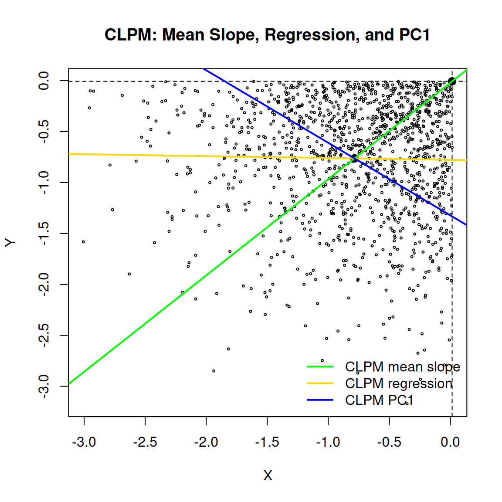

Chapter 11 Directional Spectral Decomposition
Chapters 9 and 10 developed dependence structure using directional co-partial moments. Chapter 9 showed that covariance and correlation arise from aggregations of directional co-partial moments. Chapter 10 showed that those directional components reveal nonlinear, asymmetric, and tail-specific dependence that correlation cannot detect.
One further classical object lies downstream of covariance: its eigenvalue decomposition.
Principal component analysis, factor models, covariance ellipses, and multivariate risk diagnostics all begin from the eigensystem of the covariance matrix. Since covariance itself is recovered from directional co-partial moment matrices, the eigensystem is also recoverable from those directional components.
This chapter establishes that result and draws out its consequence:
\[ \text{PCA diagonalizes covariance. Directional decomposition explains where that covariance came from.} \]
The eigensystem is not replaced. It is attributed.
11.1 Classical Spectral Decomposition
Let
\[ Z = \begin{pmatrix} X \\ Y \end{pmatrix} \]
be a bivariate random vector with mean
\[ \mu = E[Z] = \begin{pmatrix} \mu_X \\ \mu_Y \end{pmatrix}. \]
The covariance matrix is
\[ \Sigma = E[(Z-\mu)(Z-\mu)^\top]. \]
Since \(\Sigma\) is symmetric and positive semidefinite, it admits an orthonormal eigendecomposition
\[ \Sigma = V\Lambda V^\top, \]
where \(V = (v_1, v_2)\) contains orthonormal eigenvectors and
\[ \Lambda = \begin{pmatrix} \lambda_1 & 0 \\ 0 & \lambda_2 \end{pmatrix} \]
contains eigenvalues with \(\lambda_1 \geq \lambda_2 \geq 0\).
Classical PCA identifies \(v_1\) as the direction of maximum variance:
\[ v_1 = \arg\max_{\|v\|=1} v^\top \Sigma v, \qquad \lambda_1 = v_1^\top \Sigma v_1. \]
This is a powerful summary, but it remains a symmetric aggregate. It does not say whether the variance along \(v_1\) originated from concordant lower-side co-movement, concordant upper-side co-movement, divergent behavior, or residual scatter within directional regions.
Directional spectral decomposition answers that question.
11.2 Directional Recovery of the Eigensystem
Chapter 9 established that the covariance matrix is recovered from directional co-partial moment matrices:
\[ \Sigma = \operatorname{CoLPM} + \operatorname{CoUPM} - \operatorname{DLPM} - \operatorname{DUPM}. \]
Since the covariance matrix determines its eigensystem, the classical eigensystem is also recovered from the directional aggregate:
\[ (\lambda_i, v_i) = \operatorname{eig}_i \!\left( \operatorname{CoLPM} + \operatorname{CoUPM} - \operatorname{DLPM} - \operatorname{DUPM} \right). \]
The information hierarchy therefore extends to
\[ (\operatorname{CoLPM},\operatorname{CoUPM},\operatorname{DLPM},\operatorname{DUPM}) \rightarrow \Sigma \rightarrow (\lambda_i, v_i) \rightarrow \rho. \]
The ordering is not symmetric. The directional matrices determine the covariance matrix and its eigenstructure. The eigenstructure does not determine the directional matrices. Many different directional structures can produce the same covariance matrix, and many different covariance matrices can produce similar principal directions. Once the directional components are aggregated into \(\Sigma\), the information about where the co-movement occurred is generally lost.
This asymmetry is central:
\[ \text{Directional structure recovers PCA. PCA does not recover directional structure.} \]
11.3 Quadrant Mean Geometry
There is a second route to the eigensystem, more geometric than the co-partial moment reconstruction. It passes through the conditional means of the four directional quadrants.
Let the benchmarks be the component means:
\[ t_X = \mu_X, \qquad t_Y = \mu_Y. \]
The four directional quadrants are
| Region | Condition | Interpretation |
|---|---|---|
| CUPM | \(X > \mu_X,\; Y > \mu_Y\) | concordant upper |
| CLPM | \(X \leq \mu_X,\; Y \leq \mu_Y\) | concordant lower |
| DLPM | \(X > \mu_X,\; Y \leq \mu_Y\) | divergent lower |
| DUPM | \(X \leq \mu_X,\; Y > \mu_Y\) | divergent upper |
For each quadrant \(q\), define the quadrant probability
\[ p_q = P(Q = q), \]
the quadrant conditional mean
\[ m_q = E[Z \mid Q = q], \]
and the centered quadrant mean displacement
\[ u_q = m_q - \mu. \]
Because the quadrant means partition the distribution,
\[ \mu = \sum_q p_q m_q, \]
which gives
\[ \sum_q p_q u_q = 0. \]
This is the law of total expectation in vector form. It implies that the weighted quadrant mean displacements must balance around the global mean.
The displacement vectors \(u_q\) are the geometric objects of interest. Each one points from the global mean to a quadrant conditional mean. They identify where the conditional mass of the distribution sits after the directional partition.
11.4 Between-Within Covariance Decomposition
The covariance matrix decomposes exactly through the quadrant partition.
Inside quadrant \(q\), write
\[ Z - \mu = (m_q - \mu) + (Z - m_q) = u_q + \varepsilon_q, \]
where \(E[\varepsilon_q \mid Q = q] = 0\).
The conditional covariance contribution from quadrant \(q\) is
\[ E[(Z-\mu)(Z-\mu)^\top \mid Q = q] = u_q u_q^\top + \operatorname{Cov}(Z \mid Q = q). \]
Averaging across quadrants gives
\[ \boxed{ \Sigma = \underbrace{\sum_q p_q u_q u_q^\top}_{\Sigma_Q} + \underbrace{\sum_q p_q \operatorname{Cov}(Z \mid Q = q)}_{\Sigma_W}. } \]
The first term, \(\Sigma_Q\), is the between-quadrant covariance: how much covariance arises from the locations of the quadrant conditional means relative to the global mean.
The second term, \(\Sigma_W\), is the within-quadrant covariance: the remaining scatter around each quadrant mean, pooled across quadrants.
This identity is the law of total covariance applied to the NNS quadrant partition. It is exact and requires no distributional assumptions.
The two terms answer different questions.
\[ \text{PCA of }\Sigma\text{ is PCA of total covariance.} \]
\[ \text{PCA of }\Sigma_Q\text{ is PCA of conditional mean displacement.} \]
These need not coincide.
11.5 Rank-One Spectral Primitives
Each quadrant contributes a rank-one matrix to the between-quadrant covariance:
\[ B_q = p_q u_q u_q^\top. \]
When \(u_q \neq 0\),
\[ B_q u_q = p_q u_q u_q^\top u_q = p_q \|u_q\|^2 u_q. \]
The vector \(u_q\) is the nonzero eigenvector of \(B_q\), with eigenvalue
\[ \lambda_q = p_q \|u_q\|^2. \]
After normalization, \(v_q = u_q / \|u_q\|\) is the corresponding unit eigenvector.
This is the precise sense in which each quadrant mean displacement is spectral. It is not generally an eigenvector of the full covariance matrix. It is exactly the eigenvector of its own rank-one contribution to \(\Sigma_Q\).
The between-quadrant covariance is the sum of these rank-one primitives:
\[ \Sigma_Q = B_{\operatorname{CUPM}} +B_{\operatorname{CLPM}} +B_{\operatorname{DLPM}} +B_{\operatorname{DUPM}}. \]
Defining the matrix of weighted displacement columns,
\[ C = \begin{pmatrix} \sqrt{p_{\operatorname{CUPM}}}\,u_{\operatorname{CUPM}} & \sqrt{p_{\operatorname{CLPM}}}\,u_{\operatorname{CLPM}} & \sqrt{p_{\operatorname{DLPM}}}\,u_{\operatorname{DLPM}} & \sqrt{p_{\operatorname{DUPM}}}\,u_{\operatorname{DUPM}} \end{pmatrix}, \]
one has \(\Sigma_Q = CC^\top\). The eigenvectors of \(\Sigma_Q\) are the left singular vectors of \(C\), built entirely from weighted quadrant mean displacements.
\[ \boxed{ \text{Centered NNS quadrant means are rank-one spectral primitives.} } \]
11.6 Recovering Eigenvectors from Quadrant Conditional Means
The preceding section gives the local rank-one statement. We now make the recovery step explicit.
At a given NNS split, the only inputs needed for the between-quadrant eigensystem are the quadrant probabilities and the quadrant conditional means:
\[ \{p_q, m_q\}_{q \in \{\operatorname{CUPM},\operatorname{CLPM},\operatorname{DLPM},\operatorname{DUPM}\}}. \]
From these quantities,
\[ \mu = \sum_q p_q m_q, \qquad u_q = m_q-\mu. \]
Construct the weighted conditional-mean matrix
\[ C = \begin{pmatrix} \sqrt{p_{\operatorname{CUPM}}}u_{\operatorname{CUPM}} & \sqrt{p_{\operatorname{CLPM}}}u_{\operatorname{CLPM}} & \sqrt{p_{\operatorname{DLPM}}}u_{\operatorname{DLPM}} & \sqrt{p_{\operatorname{DUPM}}}u_{\operatorname{DUPM}} \end{pmatrix}. \]
Then
\[ \Sigma_Q = CC^\top. \]
Thus the eigenvectors of \(\Sigma_Q\) are recovered from the quadrant conditional means by
\[ \Sigma_Q v_j = \lambda_j v_j. \]
Equivalently, take the singular value decomposition
\[ C = U\Lambda_Q^{1/2}R^\top. \]
Then
\[ \Sigma_Q = CC^\top = U\Lambda_Q U^\top, \]
so the columns of \(U\) are the eigenvectors of the conditional-mean covariance. No raw observations are needed at this step once the quadrant conditional means and probabilities have been computed.
This is the exact role of the conditional means:
\[ \boxed{ \{p_q,m_q\}_q \quad \Longrightarrow \quad \{u_q\}_q \quad \Longrightarrow \quad C \quad \Longrightarrow \quad \Sigma_Q \quad \Longrightarrow \quad (v_{Q,j},\lambda_{Q,j}). } \]
The eigenvectors are therefore not imposed externally. They are recovered from the geometry of the four quadrant conditional means.
A second, more visual representation comes from opposite quadrant centroid contrasts:
\[ a_C = m_{\operatorname{CUPM}} - m_{\operatorname{CLPM}}, \qquad a_D = m_{\operatorname{DLPM}} - m_{\operatorname{DUPM}}. \]
The first contrast joins the two concordant conditional means. The second contrast joins the two divergent conditional means. After normalization,
\[ \tilde v_C = \frac{a_C}{\|a_C\|}, \qquad \tilde v_D = \frac{a_D}{\|a_D\|}. \]
When the concordant and divergent centroid pairs lie on orthogonal local axes, these contrast directions are the eigenvectors of \(\Sigma_Q\):
\[ v_{Q,1} = \tilde v_C, \qquad v_{Q,2} = \tilde v_D, \]
up to signs and ordering. This alignment condition is common in symmetric or nearly elliptical dependence structures, but it is not required for recovery. Without this special alignment, the eigenvectors of \(\Sigma_Q\) are the orthogonal principal axes obtained by diagonalizing \(CC^\top\); they remain weighted linear combinations of the same quadrant conditional mean displacements.
The distinction is important:
\[ \boxed{ \text{Individual }u_q\text{ are eigenvectors of their own }B_q=p_qu_qu_q^\top. } \]
\[ \boxed{ \text{The full between-quadrant eigenvectors are recovered by summing those }B_q\text{ through }\Sigma_Q=CC^\top. } \]
For the original PCA eigensystem of the full covariance matrix, add the within-quadrant residual covariance:
\[ \Sigma = \Sigma_Q+\Sigma_W. \]
Then diagonalizing \(\Sigma\) recovers the classical eigenvectors. As recursive NNS partitions refine and terminal cells shrink, \(\Sigma_W\) decreases. At the finite-sample singleton limit, \(\Sigma_W=0\), so the eigenvectors of the full covariance are recovered entirely from conditional means of the terminal regions.
11.7 Quadrant Mean Slope Versus PC1 Within a Quadrant
The between-within decomposition clarifies a distinction that arises when analyzing a single directional quadrant.
Consider the CLPM region. The CLPM mean displacement is
\[ u_{\operatorname{CLPM}} = m_{\operatorname{CLPM}} - \mu. \]
The line from \(\mu\) through \(m_{\operatorname{CLPM}}\) has direction
\[ g_{\operatorname{CLPM}} = \frac{u_{\operatorname{CLPM}}}{\|u_{\operatorname{CLPM}}\|}. \]
This is the eigenvector of the rank-one matrix \(B_{\operatorname{CLPM}}\).
By contrast, the first principal component of the CLPM observations is the leading eigenvector of
\[ \operatorname{Cov}(Z \mid \operatorname{CLPM}). \]
These are different matrices computed from different objects. The quadrant mean slope is a between-centroid displacement direction. The within-quadrant PC1 is a within-quadrant scatter direction. The within-quadrant regression line is a conditional least-squares direction.
\[ \text{quadrant mean slope} \neq \text{within-quadrant PC1} \neq \text{within-quadrant regression line.} \]
For directional dependence analysis, the quadrant mean slope is the relevant object because it describes where conditional mass moved relative to the global mean benchmark.
11.8 Eigenvalue Attribution
The most useful result is not merely that the eigensystem is recoverable. It is that each eigenvalue can be attributed to directional sources.
Let \(v_i\) be a unit eigenvector of \(\Sigma\). Then
\[ \lambda_i = v_i^\top \Sigma v_i. \]
Substituting the between-within decomposition,
\[ \lambda_i = v_i^\top \Sigma_Q v_i + v_i^\top \Sigma_W v_i. \]
Expanding each term,
\[ \boxed{ \lambda_i = \sum_q p_q (v_i^\top u_q)^2 + \sum_q p_q \, v_i^\top \operatorname{Cov}(Z \mid Q{=}q)\, v_i. } \]
The first sum is the between-quadrant contribution: each term measures how much the \(i\)-th principal direction aligns with the conditional mean displacement of quadrant \(q\), weighted by the quadrant’s probability.
The second sum is the within-quadrant contribution: residual scatter around each quadrant mean, projected onto the principal direction.
Define
\[ \lambda_{i,Q} = \sum_q p_q (v_i^\top u_q)^2, \qquad \lambda_{i,W} = \sum_q p_q \, v_i^\top \operatorname{Cov}(Z \mid Q{=}q)\, v_i, \]
so that
\[ \lambda_i = \lambda_{i,Q} + \lambda_{i,W}. \]
At the quadrant level, the between contribution from quadrant \(q\) to eigenvalue \(i\) is
\[ \lambda_{i,q}^{between} = p_q (v_i^\top u_q)^2. \]
This answers a question ordinary PCA does not pose:
\[ \boxed{ \text{Which directional regions of the joint distribution generated this eigenvalue?} } \]
If most of \(\lambda_1\) arises from CLPM and CUPM terms, the leading principal direction is driven by concordant co-movement. If most of \(\lambda_1\) arises from DLPM and DUPM terms, the leading direction is driven by divergent behavior. If \(\Sigma_W\) dominates, the principal axis reflects residual within-region scatter rather than separation among conditional means.
PCA reports the axis. Directional decomposition reports the sources of that axis.
11.9 Two-Dimensional Explicit Recovery
In two dimensions the eigensystem is recovered in closed form from the directional components.
Let the reconstructed covariance matrix be
\[ \Sigma = \begin{pmatrix} a & b \\ b & d \end{pmatrix}. \]
The eigenvalues are
\[ \lambda_{1,2} = \frac{a+d}{2} \pm \sqrt{ \left(\frac{a-d}{2}\right)^2 + b^2 }. \]
The principal-axis angle \(\theta\) satisfies
\[ \tan(2\theta) = \frac{2b}{a-d}. \]
The eigenvectors are
\[ v_1 = \begin{pmatrix} \cos\theta \\ \sin\theta \end{pmatrix}, \qquad v_2 = \begin{pmatrix} -\sin\theta \\ \cos\theta \end{pmatrix}. \]
Because the directional pieces reconstruct \(a\), \(b\), and \(d\) exactly, they also reconstruct \(\lambda_{1,2}\) and \(v_{1,2}\) exactly. The recovery is complete.
11.10 Recursive Spectral Refinement
Chapter 10 noted that NNS partitioning can be applied recursively, subdividing each region into further quadrants. This produces a nested sequence of partitions \(\mathcal{P}_1, \mathcal{P}_2, \ldots, \mathcal{P}_O\).
For any partition \(\mathcal{P}_O\) with cells \(r\), probabilities \(p_r\), conditional means \(m_r\), and displacements \(u_r = m_r - \mu\), the same decomposition applies:
\[ \Sigma = \sum_r p_r u_r u_r^\top + \sum_r p_r \operatorname{Cov}(Z \mid r). \]
Each cell contributes a rank-one between-cell primitive \(B_r = p_r u_r u_r^\top\).
As the partition refines, within-cell covariance decreases. At the limit where each terminal cell contains one observation,
\[ \operatorname{Cov}(Z \mid r) = 0 \]
for every cell, and the full empirical covariance is represented entirely by terminal cell centroids:
\[ \Sigma = \sum_r p_r u_r u_r^\top. \]
The eigenvalue perturbation bound follows immediately from Weyl’s inequality. Since \(\Sigma - B_O = W_O\),
\[ |\lambda_i(\Sigma) - \lambda_i(B_O)| \leq \|W_O\|_2. \]
When the eigenvalue gap is large, fewer partition steps are needed to recover the dominant principal direction.
Recursive NNS partitioning therefore provides a multiscale positive semidefinite decomposition of conditional mean covariance: each split explains part of the residual total covariance through the between-child displacement, and these contributions accumulate monotonically as cells are refined.
11.11 Multivariate Extension
The same construction extends to any dimension \(d\).
A mean split across all \(d\) coordinates produces up to \(2^d\) orthants. For any partition with cells \(r\), the decomposition
\[ \Sigma = \sum_r p_r u_r u_r^\top + \sum_r p_r \operatorname{Cov}(Z \mid r) \]
holds in \(\mathbb{R}^{d \times d}\).
Each cell contributes a rank-one positive semidefinite matrix \(B_r = p_r u_r u_r^\top\). The between-cell covariance has rank at most \(\min(d, K-1)\), where \(K\) is the number of occupied cells. The \(K-1\) bound appears because the constraint \(\sum_r p_r u_r = 0\) removes one degree of freedom.
The multivariate statement therefore matches the bivariate one:
\[ \boxed{ \text{NNS partitions generate locatable rank-one spectral primitives in any dimension.} } \]
See the following for a detailed higher dimension example.
11.12 Converse Failure
The directional decomposition runs in one direction.
Given the directional pieces \(\{p_q, m_q, \operatorname{Cov}(Z \mid Q{=}q)\}_q\), the covariance matrix and its eigensystem are recovered. Given only \(\Sigma\) or its eigensystem \((V, \Lambda)\), the directional pieces are not recovered.
Neither \(\Sigma\) nor \((V, \Lambda)\) determines
- which observations belong to CLPM, CUPM, DLPM, or DUPM,
- the quadrant probabilities \(p_q\),
- the quadrant conditional means \(m_q\),
- the within-quadrant covariance matrices \(\operatorname{Cov}(Z \mid Q{=}q)\),
- or the higher-order directional moment profiles.
In symbols:
\[ \{p_q, m_q, \operatorname{Cov}(Z \mid Q{=}q)\}_q \rightarrow \Sigma \rightarrow (V, \Lambda) \]
is recoverable in both steps, while
\[ (V, \Lambda) \rightarrow \{p_q, m_q, \operatorname{Cov}(Z \mid Q{=}q)\}_q \]
is not.
This is another instance of the information-loss principle developed throughout the book. Directional components determine symmetric aggregates. Symmetric aggregates do not generally determine directional components.
11.13 Correct Claims and Caveats
Several precise statements follow from the results above.
Correct:
\[ \text{NNS directional co-partial moment matrices recover covariance and therefore recover the classical eigensystem.} \]
Correct:
\[ \text{Each centered quadrant mean }u_q\text{ is the eigenvector of }B_q = p_q u_q u_q^\top. \]
Correct:
\[ \text{Classical eigenvalues admit exact directional attribution: } \lambda_i = \lambda_{i,Q} + \lambda_{i,W}. \]
Correct:
\[ \text{The full eigenvectors of }\Sigma_Q\text{ are obtained after summing the }B_q\text{ matrices, not before.} \]
Not generally correct:
\[ \text{Every line connecting opposite quadrant centroids is an eigenvector of }\Sigma_Q. \]
That holds only when concordant and divergent quadrant means lie on orthogonal axes, a special alignment condition that may hold approximately for nearly elliptical positive dependence but is not guaranteed in general.
Not generally correct:
\[ \lambda_1(\Sigma_Q + \Sigma_W) = \lambda_1(\Sigma_Q) + \lambda_1(\Sigma_W). \]
Eigenvalues are not additive across summands. The exact attribution uses the Rayleigh quotient along the same eigenvector:
\[ \lambda_i = v_i^\top \Sigma_Q v_i + v_i^\top \Sigma_W v_i. \]
These caveats strengthen rather than weaken the results. They identify precisely what is claimed: locatable spectral attribution, not a replacement for linear algebra.
11.14 Quadrant Decomposition in R
The following functions implement the between-within decomposition. Population normalization \(1/n\) is used throughout to match the expectation formulas above.
pop_cov <- function(Z) {
Z <- as.matrix(Z)
Zc <- sweep(Z, 2, colMeans(Z), FUN = "-")
crossprod(Zc) / nrow(Zc)
}
quadrant_decomposition <- function(Z) {
Z <- as.matrix(Z)
stopifnot(ncol(Z) == 2)
n <- nrow(Z)
mu <- colMeans(Z)
mx <- mu[1]; my <- mu[2]
quadrants <- list(
CUPM = (Z[,1] > mx) & (Z[,2] > my),
CLPM = (Z[,1] <= mx) & (Z[,2] <= my),
DLPM = (Z[,1] > mx) & (Z[,2] <= my),
DUPM = (Z[,1] <= mx) & (Z[,2] > my)
)
Sigma_Q <- matrix(0, 2, 2)
Sigma_W <- matrix(0, 2, 2)
details <- vector("list", length(quadrants))
centroids <- vector("list", length(quadrants))
for (i in seq_along(quadrants)) {
qname <- names(quadrants)[i]
mask <- quadrants[[i]]
n_q <- sum(mask)
if (n_q == 0) next
p_q <- n_q / n
Z_q <- Z[mask, , drop = FALSE]
m_q <- colMeans(Z_q)
u_q <- m_q - mu
Sigma_Q <- Sigma_Q + p_q * tcrossprod(u_q)
Sigma_W <- Sigma_W + p_q * pop_cov(Z_q)
centroids[[i]] <- data.frame(
quadrant = qname,
n = n_q,
p = p_q,
mean_x = m_q[1],
mean_y = m_q[2],
u_x = u_q[1],
u_y = u_q[2]
)
details[[i]] <- data.frame(
quadrant = qname,
n = n_q,
p = round(p_q, 6),
mean_x = round(m_q[1], 6),
mean_y = round(m_q[2], 6),
u_x = round(u_q[1], 6),
u_y = round(u_q[2], 6),
lambda_rank1 = round(p_q * sum(u_q^2), 6)
)
}
list(
mu = mu,
Sigma = pop_cov(Z),
Sigma_Q = Sigma_Q,
Sigma_W = Sigma_W,
centroids = do.call(rbind, centroids),
details = do.call(rbind, details)
)
}Generate positively dependent bivariate data, compute the quadrant decomposition, and pass \(\Sigma\) directly to eigen for attribution.
set.seed(123)
n <- 10000
rho <- 0.70
R <- matrix(c(1, rho, rho, 1), 2, 2)
Z <- matrix(rnorm(2 * n), n, 2) %*% chol(R)
D <- quadrant_decomposition(Z)
eig_classical <- eigen(D$Sigma)
D$details## quadrant n p mean_x mean_y u_x u_y lambda_rank1
## 1 CUPM 3732 0.3732 0.909351 0.902914 0.911723 0.911077 0.619997
## 2 CLPM 3779 0.3779 -0.900760 -0.915622 -0.898388 -0.907459 0.616197
## 3 DLPM 1232 0.1232 0.464620 -0.490819 0.466992 -0.482655 0.055568
## 4 DUPM 1257 0.1257 -0.466076 0.488080 -0.463704 0.496243 0.057983The quadrant summary shows the four conditional mean displacements \(u_q\) and their rank-one eigenvalues \(p_q \|u_q\|^2\). For positively dependent data the concordant quadrants (CUPM, CLPM) carry large displacements in opposite directions along the main axis, while the divergent quadrants (DLPM, DUPM) show much smaller displacements orthogonal to it.
11.15 Rank-One Primitive Verification in R
The previous table reports the rank-one eigenvalue for each quadrant. The following code verifies the stronger statement from Section 11.5 directly: for each quadrant,
\[ B_q u_q = p_q u_q u_q^\top u_q = p_q \|u_q\|^2 u_q. \]
It also verifies that summing the four rank-one primitives reconstructs the between-quadrant conditional-mean covariance \(\Sigma_Q\).
rank_one_primitive_check <- function(D) {
pieces <- lapply(seq_len(nrow(D$centroids)), function(i) {
row <- D$centroids[i, ]
u <- c(row$u_x, row$u_y)
p <- row$p
Bq <- p * tcrossprod(u)
lambda <- p * sum(u^2)
lhs <- as.numeric(Bq %*% u)
rhs <- lambda * u
eig_Bq <- eigen(Bq, symmetric = TRUE)
v_q <- as.numeric(u / sqrt(sum(u^2)))
list(
Bq = Bq,
table = data.frame(
quadrant = row$quadrant,
lambda_rank1 = lambda,
max_abs_Bu_minus_lambda_u = max(abs(lhs - rhs)),
alignment_with_eigen_Bq = abs(drop(crossprod(v_q, eig_Bq$vectors[, 1])))
)
)
})
Sigma_Q_from_Bq <- Reduce(`+`, lapply(pieces, `[[`, "Bq"))
list(
checks = do.call(rbind, lapply(pieces, `[[`, "table")),
Sigma_Q_from_Bq = Sigma_Q_from_Bq,
max_abs_Sigma_Q_error = max(abs(Sigma_Q_from_Bq - D$Sigma_Q))
)
}
R1 <- rank_one_primitive_check(D)
R1$checks## quadrant lambda_rank1 max_abs_Bu_minus_lambda_u alignment_with_eigen_Bq
## 1 CUPM 0.61999744 0.000000e+00 1
## 2 CLPM 0.61619706 1.110223e-16 1
## 3 DLPM 0.05556776 3.469447e-18 1
## 4 DUPM 0.05798275 3.469447e-18 1## [1] 0The column max_abs_Bu_minus_lambda_u should be numerically zero, confirming that each centered quadrant conditional mean is the eigenvector of its own rank-one matrix.
The column alignment_with_eigen_Bq should be one up to floating-point precision, confirming that the normalized vector \(u_q / \|u_q\|\) is the same direction recovered by eigen(Bq).
The final scalar verifies
\[ \Sigma_Q = B_{\operatorname{CUPM}} + B_{\operatorname{CLPM}} + B_{\operatorname{DLPM}} + B_{\operatorname{DUPM}}. \]
11.16 Conditional-Mean Eigenvector Recovery in R
The following code uses only the quadrant probabilities and quadrant conditional means stored in D$centroids.
It reconstructs \(C\), then \(\Sigma_Q = CC^\top\), then the eigenvectors of the between-quadrant conditional-mean covariance.
recover_eigen_from_quadrant_means <- function(D) {
U <- as.matrix(D$centroids[, c("u_x", "u_y")])
P <- D$centroids$p
Cmat <- t(sqrt(P) * U)
Sigma_Q_from_means <- Cmat %*% t(Cmat)
eig_Q <- eigen(Sigma_Q_from_means)
list(
C = Cmat,
Sigma_Q_from_means = Sigma_Q_from_means,
eig_Q = eig_Q
)
}
Qrec <- recover_eigen_from_quadrant_means(D)
# This should match D$Sigma_Q, which was accumulated quadrant by quadrant.
max(abs(Qrec$Sigma_Q_from_means - D$Sigma_Q))## [1] 1.110223e-16## [,1] [,2]
## [1,] 0.7034732 -0.7107218
## [2,] 0.7107218 0.7034732## [,1] [,2]
## [1,] 0.7034732 -0.7107218
## [2,] 0.7107218 0.7034732# Eigenvector signs are arbitrary. Absolute inner products should be near 1.
abs(t(Qrec$eig_Q$vectors) %*% eigen(D$Sigma_Q)$vectors)## [,1] [,2]
## [1,] 1.000000e+00 2.332288e-17
## [2,] 2.332288e-17 1.000000e+00The recovery above is the explicit conditional-mean step:
\[ \{p_q,m_q\}_q \rightarrow C \rightarrow CC^\top \rightarrow \operatorname{eig}(CC^\top). \]
The same conditional means also provide the visible concordant and divergent centroid contrasts.
unit <- function(x) as.numeric(x / sqrt(sum(x^2)))
centroid <- function(D, qname) {
row <- D$centroids[D$centroids$quadrant == qname, ]
c(row$mean_x, row$mean_y)
}
v_concordant <- unit(centroid(D, "CUPM") - centroid(D, "CLPM"))
v_divergent <- unit(centroid(D, "DLPM") - centroid(D, "DUPM"))
contrast_comparison <- cbind(
concordant_contrast = v_concordant,
Sigma_Q_v1 = Qrec$eig_Q$vectors[, 1],
divergent_contrast = v_divergent,
Sigma_Q_v2 = Qrec$eig_Q$vectors[, 2]
)
round(contrast_comparison, 6)## concordant_contrast Sigma_Q_v1 divergent_contrast Sigma_Q_v2
## [1,] 0.705463 0.703473 0.689038 -0.710722
## [2,] 0.708747 0.710722 -0.724725 0.703473# Alignment between contrast directions and the Sigma_Q eigenvectors.
round(c(
concordant_with_v1 = abs(drop(crossprod(v_concordant, Qrec$eig_Q$vectors[, 1]))),
divergent_with_v2 = abs(drop(crossprod(v_divergent, Qrec$eig_Q$vectors[, 2])))
), 6)## concordant_with_v1 divergent_with_v2
## 0.999996 0.999539For the positively dependent example, the concordant contrast aligns closely with the first between-quadrant eigenvector and the divergent contrast aligns closely with the second. In more asymmetric samples, the exact recovery remains \(C \rightarrow CC^\top \rightarrow \operatorname{eig}(CC^\top)\), while the centroid contrasts provide the directly visible directional geometry.
11.17 Eigenvalue Attribution in R
The following code attributes each classical eigenvalue into between-quadrant and within-quadrant components using the Rayleigh quotient.
V <- eig_classical$vectors
attribute_lambda <- function(v, Sigma_Q, Sigma_W) {
v <- matrix(v, ncol = 1)
between <- drop(t(v) %*% Sigma_Q %*% v)
within <- drop(t(v) %*% Sigma_W %*% v)
c(between = between, within = within, total = between + within)
}
attrib_1 <- attribute_lambda(V[, 1], D$Sigma_Q, D$Sigma_W)
attrib_2 <- attribute_lambda(V[, 2], D$Sigma_Q, D$Sigma_W)
rbind(lambda_1 = attrib_1, lambda_2 = attrib_2)## between within total
## lambda_1 1.2362859 0.4677328 1.7040187
## lambda_2 0.1134591 0.1858835 0.2993426## [1] 1.7040187 0.2993426This is the exact decomposition \(\lambda_i = v_i^\top \Sigma_Q v_i + v_i^\top \Sigma_W v_i\). The totals in each row match the classical eigenvalues to floating-point precision.
Quadrant-level attribution of the between component:
quadrant_between_contrib <- function(Z, v) {
Z <- as.matrix(Z)
v <- as.numeric(v)
n <- nrow(Z)
mu <- colMeans(Z)
mx <- mu[1]; my <- mu[2]
quadrants <- list(
CUPM = (Z[,1] > mx) & (Z[,2] > my),
CLPM = (Z[,1] <= mx) & (Z[,2] <= my),
DLPM = (Z[,1] > mx) & (Z[,2] <= my),
DUPM = (Z[,1] <= mx) & (Z[,2] > my)
)
out <- data.frame(quadrant = names(quadrants), contribution = NA_real_)
for (i in seq_along(quadrants)) {
mask <- quadrants[[i]]
if (sum(mask) == 0) { out$contribution[i] <- 0; next }
p_q <- sum(mask) / n
u_q <- colMeans(Z[mask, , drop = FALSE]) - mu
out$contribution[i] <- p_q * sum(v * u_q)^2
}
out
}
q_attr_v1 <- quadrant_between_contrib(Z, V[, 1])
q_attr_v2 <- quadrant_between_contrib(Z, V[, 2])
# PC1: driven by concordant quadrants
q_attr_v1## quadrant contribution
## 1 CUPM 6.199896e-01
## 2 CLPM 6.161950e-01
## 3 DLPM 2.156224e-05
## 4 DUPM 7.973202e-05## [1] 1.236286## quadrant contribution
## 1 CUPM 7.864362e-06
## 2 CLPM 2.031692e-06
## 3 DLPM 5.554620e-02
## 4 DUPM 5.790302e-02## [1] 0.1134591For this positively dependent example the pattern is clear. PC1 receives nearly all its between-quadrant contribution from CUPM and CLPM: the leading principal direction is a concordant co-movement axis. PC2 receives nearly all its between-quadrant contribution from DLPM and DUPM: the minor axis is a divergent direction. This is the interpretive content that classical PCA alone cannot supply.
11.18 Visualizing the CLPM Mean Slope
The following figure displays the three distinct directions associated with the CLPM region: the quadrant mean slope, the within-CLPM regression line, and the within-CLPM first principal component. The exact picture varies by random seed; the three lines generally differ because they are computed from different statistical objects.
set.seed(321)
n <- 5000
Z0 <- matrix(rnorm(2 * n), n, 2)
mu0 <- colMeans(Z0)
clpm_mask <- Z0[,1] <= mu0[1] & Z0[,2] <= mu0[2]
Zc <- Z0[clpm_mask, , drop = FALSE]
mc <- colMeans(Zc)
plot(
Zc[, 1], Zc[, 2],
pch = 1, cex = 0.35,
xlab = "X", ylab = "Y",
main = "CLPM: Mean Slope, Regression, and PC1"
)
abline(v = mu0[1], lty = 2)
abline(h = mu0[2], lty = 2)
points(mu0[1], mu0[2], pch = 19, cex = 1.2)
points(mc[1], mc[2], pch = 19, cex = 1.2)
# Quadrant mean slope: line through global mean toward CLPM conditional mean
slope_mean <- (mc[2] - mu0[2]) / (mc[1] - mu0[1])
abline(a = mu0[2] - slope_mean * mu0[1], b = slope_mean, col = "green", lwd = 2)
# Linear regression inside CLPM
fit <- lm(Zc[, 2] ~ Zc[, 1])
abline(fit, col = "gold", lwd = 2)
# PC1 inside CLPM: leading eigenvector of within-CLPM covariance
pc1 <- eigen(pop_cov(Zc))$vectors[, 1]
slope_pc1 <- pc1[2] / pc1[1]
abline(a = mc[2] - slope_pc1 * mc[1], b = slope_pc1, col = "blue", lwd = 2)
legend(
"bottomright",
legend = c("CLPM mean slope", "CLPM regression", "CLPM PC1"),
col = c("green", "gold", "blue"),
lwd = 2,
bty = "n"
)
The green line is the eigenvector direction of the rank-one matrix
\[ B_{\operatorname{CLPM}} = p_{\operatorname{CLPM}} u_{\operatorname{CLPM}} u_{\operatorname{CLPM}}^\top. \]
The blue line is the leading eigenvector of \(\operatorname{Cov}(Z \mid \operatorname{CLPM})\). The yellow line is the ordinary least-squares regression line within the CLPM subset. They differ because they summarize different statistical objects.
11.19 Practical Interpretation
Directional spectral decomposition changes what can be said about a classical PCA result.
Risk and Stress Testing. If the leading eigenvalue of a return covariance matrix is dominated by CLPM contributions, the leading risk factor is primarily a joint downside event. That is more actionable than knowing only that assets load on a common factor.
Portfolio Construction. Mean-variance optimization treats the covariance matrix as a single object. Directional spectral decomposition separates it into concordant downside, concordant upside, divergent, between-centroid, and within-region components. An analyst can ask whether an optimized portfolio is exposed to broad covariance or specifically to lower-tail covariance.
Nonlinear Dependence. When correlation is small but \(\Sigma_Q\) is large relative to \(\Sigma_W\), the conditional means are separated across quadrants in a way that total covariance may mask. This signals potential nonlinear or regime-dependent structure worth investigating through the full directional dependence measures of Chapter 10.
Model Diagnostics. The ratio
\[ D_{spectral} = \frac{\operatorname{tr}(\Sigma_Q)}{\operatorname{tr}(\Sigma)} \]
measures the share of total covariance trace explained by between-quadrant mean displacement. A high value indicates that the quadrant partition is capturing the relevant second-moment geometry. A low value indicates that within-region residual scatter dominates, and finer partitioning or higher-order moments may be warranted.
A full numerical implementation with transition matrix estimation, one-step predictive mixtures, and dynamic eigenvalue attribution by transition path is available at OVVO-Financial/NNS: directional-markov-regimes-pca.md.
11.20 Summary
This chapter extended the directional decomposition of covariance into spectral analysis.
Key results:
- The directional co-partial moment matrices recover covariance and therefore recover the classical PCA eigensystem:
\[ (\operatorname{CoLPM},\operatorname{CoUPM},\operatorname{DLPM},\operatorname{DUPM}) \rightarrow \Sigma \rightarrow (\lambda_i, v_i). \]
- The covariance matrix decomposes into between-quadrant and within-quadrant components:
\[ \Sigma = \sum_q p_q u_q u_q^\top + \sum_q p_q \operatorname{Cov}(Z \mid Q{=}q). \]
- Each quadrant conditional mean displacement generates a rank-one spectral primitive
\[ B_q = p_q u_q u_q^\top \]
with eigenvector \(u_q\) and eigenvalue \(p_q \|u_q\|^2\).
- Classical eigenvalues admit exact directional attribution:
\[ \lambda_i = \sum_q p_q (v_i^\top u_q)^2 + \sum_q p_q \, v_i^\top \operatorname{Cov}(Z \mid Q{=}q)\, v_i. \]
PCA is downstream of the NNS directional structure. The directional components recover PCA and explain which quadrant regions generated the result.
The converse fails: the eigensystem does not recover the directional components.
The central message is:
\[ \text{PCA diagonalizes covariance. Directional decomposition explains the sources of that covariance.} \]
The next chapter connects the directional partial moment framework to copula interpretation, linking co-partial moments with rank-based dependence structures used in multivariate statistics.